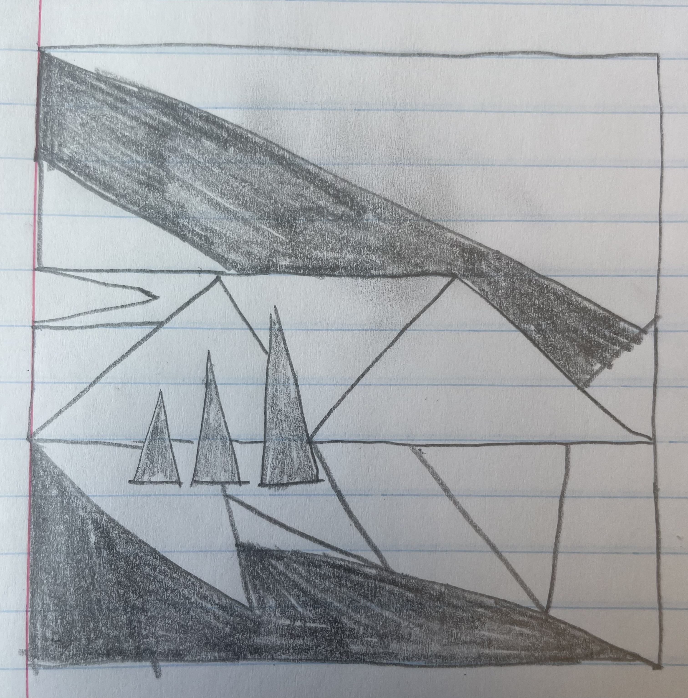

Click or drag on the canvas to paint. Choose brush type and colors with the controls.
Brush type
Color (RGB)
Size & circle
Actions
Paper sketch reference
Paper sketch (triDraw) — recreated on canvas with the Draw triangle picture button.

Awesomeness (for grader):
Semi-transparent paint via alpha blending;
triangle brush rotates to follow stroke direction while dragging;
consecutive brush stamps are connected with GL_LINES to reduce gaps.